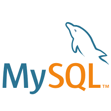

Au cours de cette formation nous allons avoirs 2 matières :
L'intégration
le HTML :

Le HTML sert à créer le contenu du site : elle va contenir uniquement la partie textuelle du site.
Le CSS :

Le CSS va nous permettre d'ajouter la couche graphique à notre site : les couleurs, les formes, le fond, etc.
Le développement
Le Javascript :

Javascript est un language de programmation de script employé pour rendre une page web interactive, le comportement de la page et son apparence pourra varier en fonction de certains paramètres.
Le PHP :

Le PHP est un langage de programmation libre, utilisépour généré des pages web dynamiques, qui sont donc modifiés en fonction de certaines informations (heure, nom de l'utilisateur, formulaire rempli par l'utilisateur etc).
MySQL :
MySQL est un système de gestion de bases de données, il permet d'enregistrer des informations rempli par l'utilisateur (exemple : formulaire de création de compte) pour ensuite être ré-utilisé au moment apprprié (ex: connexion à un site internet avec identifiant et mot de passe).
400 heures de formation intensive :
Le programme de formation de la 3W Academy est découpé en 57 modules.
- HTML, CSS, Responsive web design, Wordpress, Boot
- Javascript : 12 modules
- PHP, MySQL, POO, MVC :25 modules
- Symphony : 4 modules
Et ici, nous allons un peu jouer avec le CSS!
Les couleurs du texte: Et ma police sera en Arial!
Ce paragraphe est rouge
Ce paragraphe est bleu
Ce paragraphe est vert
Les couleurs de fond: Et ma police sera monospace!
Ce paragraphe est rouge
Ce paragraphe est bleu
Ce paragraphe est vert